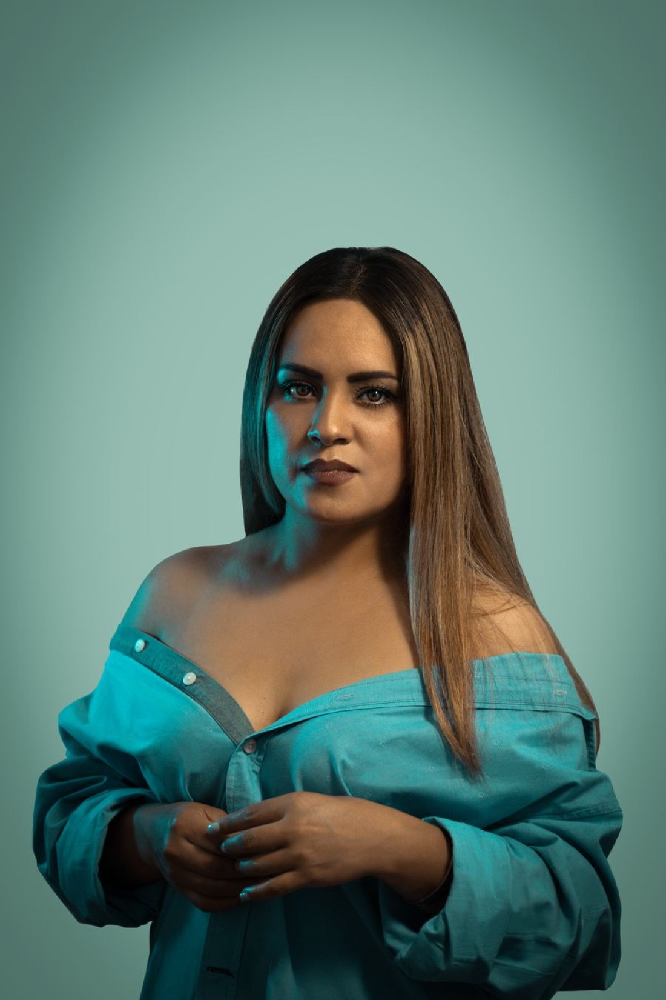

Eyes
Opens closed eyes; the rest of the face is untouched.
FOR PHOTOS THAT CAME OUT WRONG
Eyes closed, face too dark, expression tense? Fix it, compare with the original, save it if you like it.
The same photo; how it came out on the left, fixed on the right. Drag the divider.
Drag the divider
The result is still you, just the version that came out well.

BEFORE AFTER


Opens closed eyes; the rest of the face is untouched.
Hair, beard, glasses: a visual try-on only; your face stays the same.
Press and hold to compare. The result is still you, just the version that came out well.
Real previews of the tools in the app. You see the cost before it runs.
A real screen recording: choose what to fix, tap Apply, compare with the original, save.
No account needed · Your photos stay on your phone
Each fix is 1–2 credits. They never expire. No subscription.
Write to us; we reply within one business day.